경주, 맞춤
추천일정
입니다.
유네스코 세계유산부터 카페거리까지, 테마별로 즐겨보세요.
Day 1
Day 2
Day 3
1
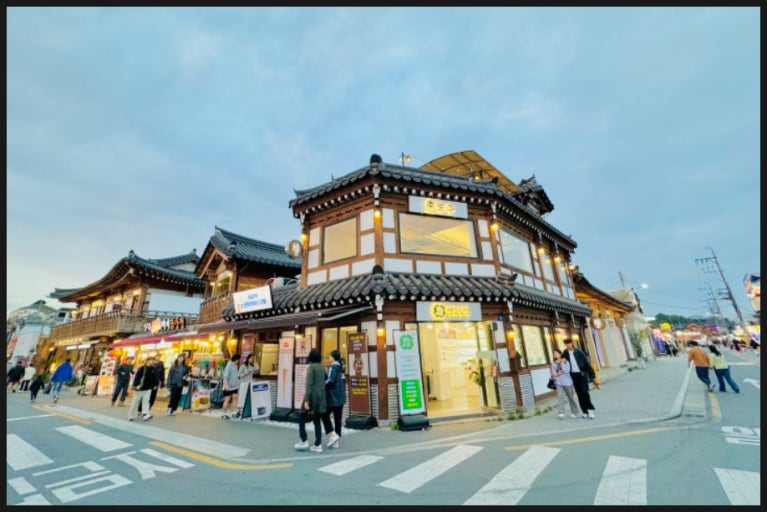
황리단길
walk ·
경상북도 경주시 포석로 일대
한옥 감성 카페와 로컬 맛집 밀집. 아침 산책 겸 브런치 추천.
2
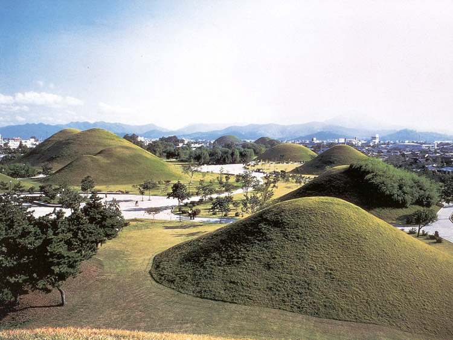
미추왕릉
heritage ·
경북 경주시 계림로 9
봉분 산책로와 천마총 관람. 목조건축·소나무길이 사진 명소.
3
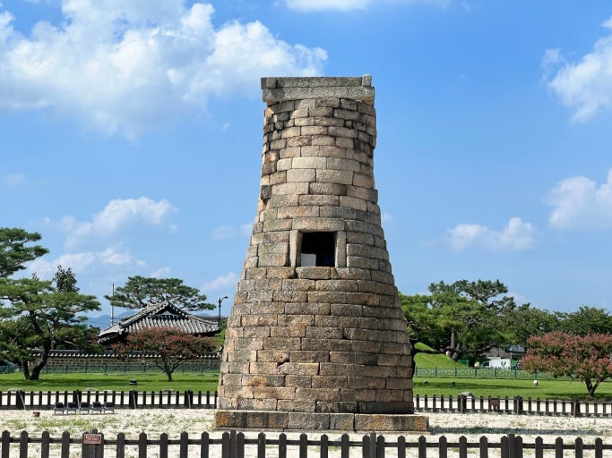
첨성대
heritage ·
경상북도 경주시 인왕동 839-1
신라 천문대. 야간 경관조명으로 밤 산책 코스로도 인기.
4
경주석빙고
night view ·
경북 경주시 인왕동 449-1
신라시대 얼음을 보관하던 장소. 데이트 장소로 인기.
5
월정교
view ·
경상북도 경주시 교동 274-1
복원 목교와 야경 포인트. 교촌마을과 연계 산책.
1
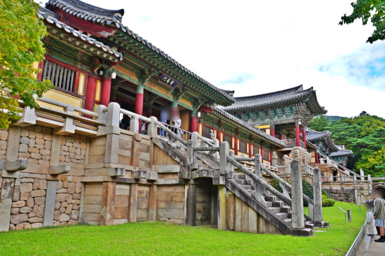
불국사
UNESCO ·
경상북도 경주시 불국로 385
청운교·백운교, 석가탑·다보탑 필수. 아침 일찍 방문 추천.
2
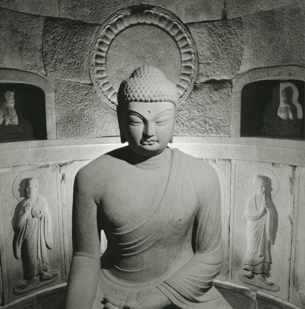
석굴암
UNESCO ·
경상북도 경주시 불국로 873-243
신라인의 석조 예술 정수. 불국사에서 셔틀/차로 이동.
3
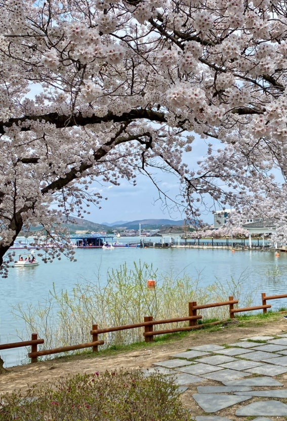
석굴암 전망대
lake walk ·
경북 경주시 진현동 산 9-1
석굴암에서 나와 경치가 한눈에 보이는 시원한 코스.
4
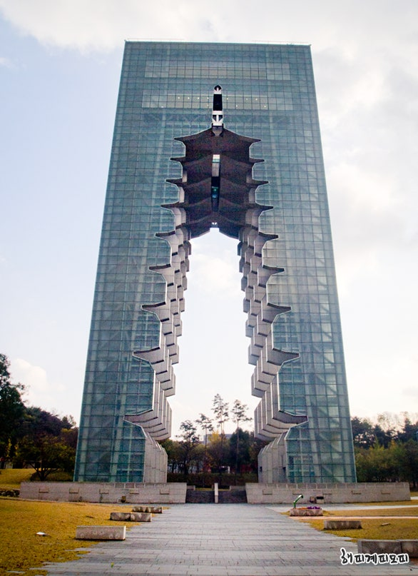
경주월드
view ·
경북 경주시 보문로 544
신나고 짜릿한 익스트림 놀이공원.
5
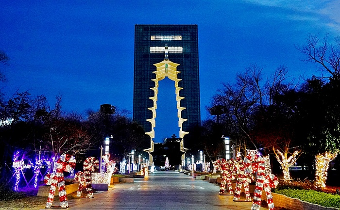
경주 엑스포
cafe ·
경북 경주시 경감로 614
엑스포. 다양한 볼거리와 신나는 체험 활동이 많은 곳.
1
경주국립박물관
museum ·
경상북도 경주시 일정로 186
성덕대왕신종(에밀레종) 등 신라 유물 상설·특별전 관람.
2
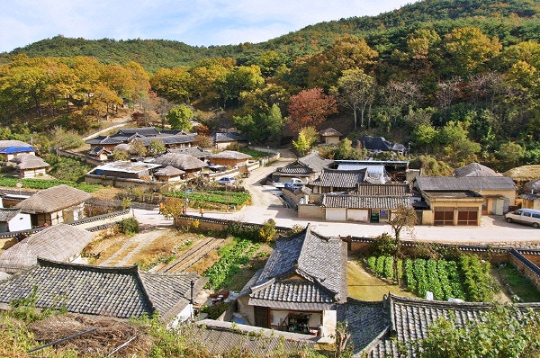
양동마을
UNESCO ·
경상북도 경주시 강동면 양동마을길 130
전통 한옥 집성촌 산책. 관가정·향단 등 포토스팟.
3
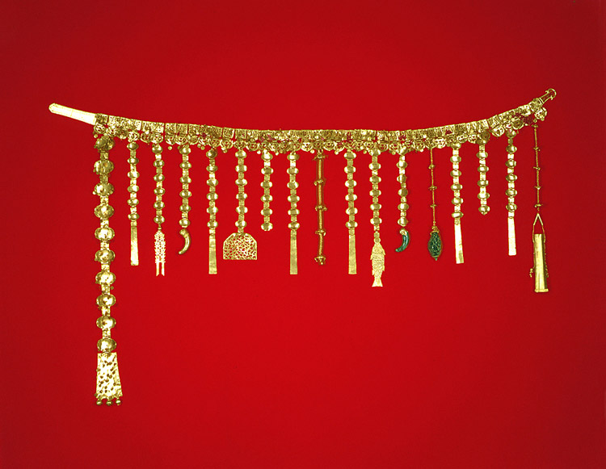
금관총
coast ·
경북 경주시 노서동 104
신라시대 금으로 만든 여러 장신구를 한번에 볼 수 있는 귀중한 경험.
4
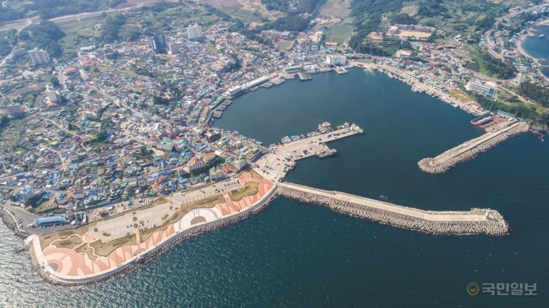
서라벌 문화회관
food ·
경북 경주시 금성로 236
천년의 역사가 담긴 정보들이 모두 모여있는 곳. 서라벌 문화회관
5
황성공원 산책
park ·
경상북도 경주시 황성공원로 29
소나무 숲길로 마무리 힐링 코스.
내 일정으로 담기